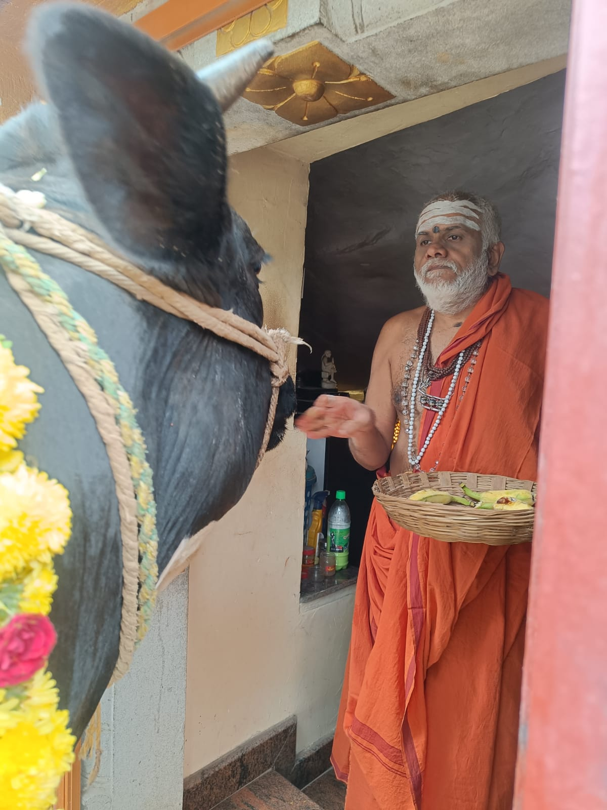

Guhai Kovil Aavani Bharani Kali Puja

Guhai Swamiji performed the Kali Abhishekam & Puja at Guhai Kovil on the occasion of Aavani Bharani. The sacred ritual was conducted with utmost devotion and traditional practices, bringing spiritual energy to all devotees present.

Aavani Bharani is considered an auspicious day dedicated to Goddess Kali, and the ceremonies at Guhai Kovil were performed following all traditional rituals. Devotees gathered to receive blessings and witness the divine ceremonies.
